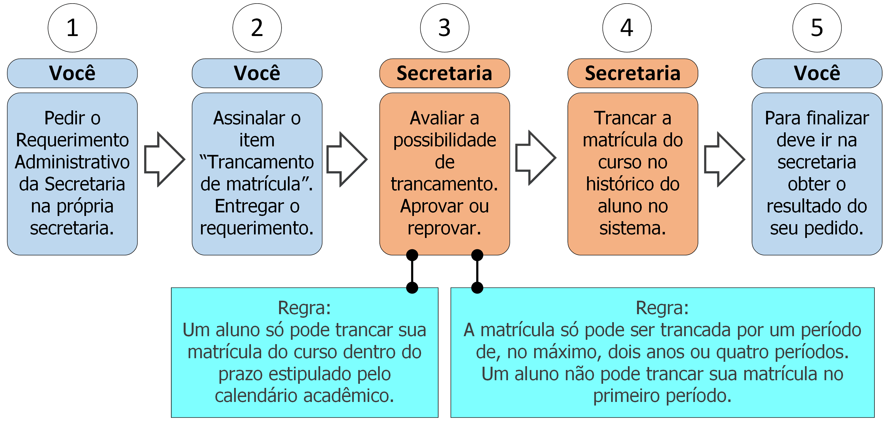

14. Trancamento de matrícula

14.1 Descrição
Após o início do período letivo você pode trancar sua matrícula no curso. Para isso deve seguir os seguintes passos:
- A. Peça o Requerimento Administrativo da Secretaria;
- B. Assinale o item “Trancamento de matrícula”;
- C. Entregue o requerimento;
- D. A secretaria verificará se não há irregularidades que impeçam o trancamento (ver regras 1 e 2 na seção 14.3);
- E. A Secretaria trancará matrícula do curso no seu histórico escolar;
- F. Vá à secretaria e procure saber sobre o resultado do seu requerimento (ver regra 3 na seção 14.3).
14.2 Documentos necessários
Nenhum.
14.3 Regras
- 1. Período de trancamento: O trancamento de matrícula do curso só pode ser feito dentro do prazo estipulado pelo Calendário Acadêmico do período em questão.
- 2. Limite do tempo de trancamento: A matrícula só pode ser trancada por um período de, no máximo, dois anos ou quatro períodos. Um aluno não pode trancar sua matrícula no primeiro período.
- 3. Prazo de efetivação: A Secretaria tem até 5 dias úteis efetivar o trancamento de matrícula do curso.